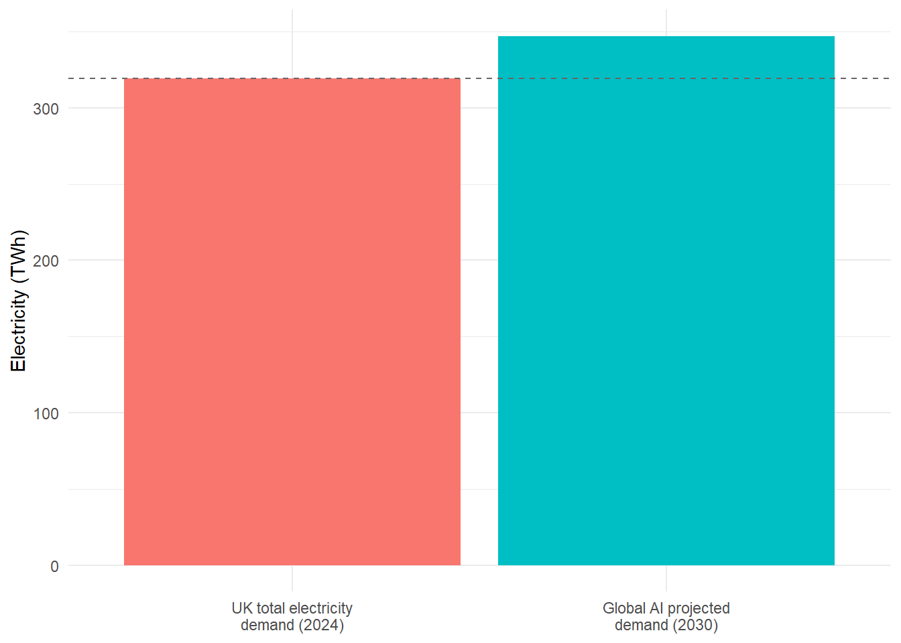
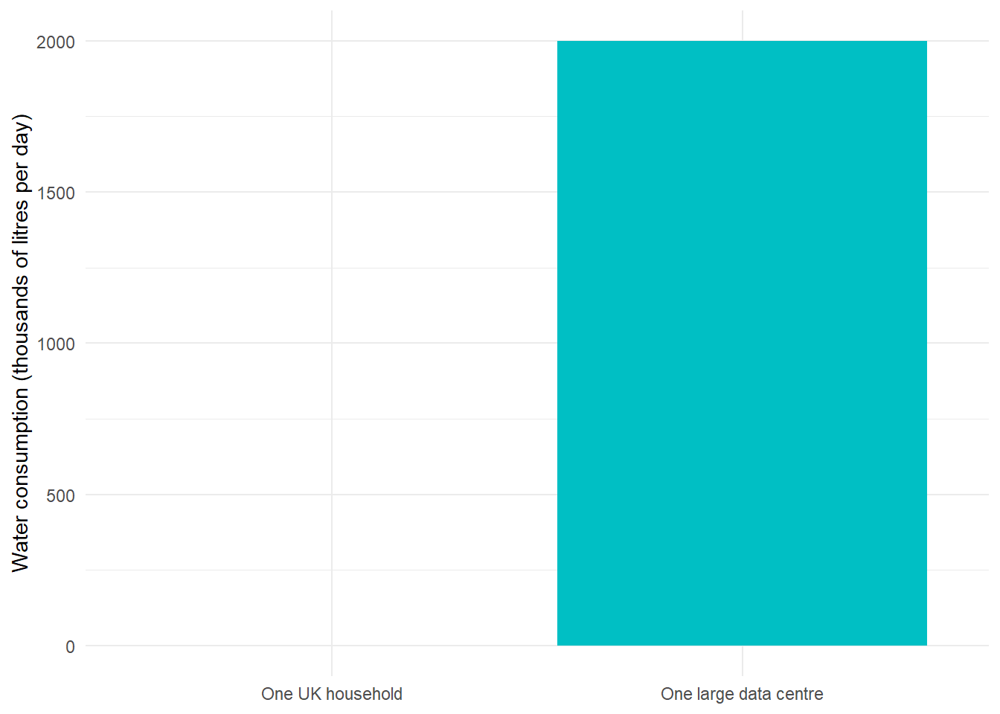

A policy briefing on artificial intelligence, climate change, and resource consumption
Summary
The rapid growth of artificial intelligence is driving an environmental crisis with consequences for climate change, electricity systems, and freshwater supplies. By 2030, the global AI industry is projected to consume more electricity than the entire United Kingdom. In regions where data centres are concentrated, they are already delaying the closure of coal-fired power stations and consuming up to 40% of state electricity supply. Each AI query also consumes freshwater for cooling — at a time when drought risk is increasing worldwide. The scale of what is now under way is not in serious dispute, and the case for urgent action is overwhelming.
Energy: AI consumes more than you think
Research from the University of Rhode Island AI Lab estimates that a single query to a modern AI chatbot consumes approximately 18.9 Wh of electricity (University of Rhode Island, cited in BestBrokers, 2025). Extended reasoning tasks can require up to 40 Wh — enough to power an LED lightbulb for four hours.
Figure 1: Energy consumption per query type. A conventional Google search barely registers. Sources: University of Rhode Island AI Lab (2025); Google via Epoch AI (2025).
As the figure shows, a conventional Google search is barely visible alongside AI’s energy demands. Extended reasoning tasks consume over 130 times more energy than a Google search, and even a typical AI query demands 63 times more (Google, via Epoch AI, 2025).
Climate impact: more electricity than the UK
The global AI sector consumed an estimated 15 TWh of electricity in 2025 (Schneider Electric, via IEEE Spectrum, 2025). By 2030, this is projected to reach 347 TWh — a more than twenty-fold increase.
To put this in a UK context: total UK electricity demand in 2024 was approximately 319 TWh (DUKES, 2024). By 2030, AI alone could be consuming more electricity than every home, factory, office, and railway in Britain combined.
uk_comparison <-data.frame(category =c("UK total electricity\ndemand (2024)", "Global AI projected\ndemand (2030)"),twh =c(319, 347))uk_comparison$category <-factor(uk_comparison$category,levels = uk_comparison$category)ggplot(uk_comparison, aes(x = category, y = twh, fill = category)) +geom_col(show.legend =FALSE) +geom_hline(yintercept =319, linetype ="dashed", colour ="grey40") +labs(x =NULL, y ="Electricity (TWh)") +theme_minimal()

Figure 2: Projected AI electricity consumption vs UK total electricity demand. Sources: Schneider Electric (2025); DUKES Chapter 5 (2024).
This energy must come from somewhere. In Virginia, home to the world’s largest concentration of data centres (JLARC, 2024), data centres already consume over 25% of the state’s electricity (Environment America, 2024), with projections reaching 36–51% by 2030 (Global Efficiency Intelligence, 2025). The consequence is stark: Virginia’s utility Dominion Energy has delayed the closure of coal-fired power plants and plans to construct new natural gas generation capacity specifically to meet data centre demand (Cardinal News, 2024). AI is not just consuming clean energy — it is actively prolonging fossil fuel use.
Water: a hidden cost
Data centres require enormous volumes of freshwater for cooling. Researchers at the University of California, Riverside estimate that a session of approximately 20 AI queries consumes roughly one 500 ml bottle of water (UC Riverside, cited in EESI, 2025). At industry scale, the average data centre uses 1.9 litres of water per kWh of electricity consumed (The Green Grid, via EESI, 2025).
A single large data centre can consume 2 million litres of freshwater per day — equivalent to the daily water usage of 6,500 UK households (CloudComputing News, 2025).
water <-data.frame(category =c("One UK household", "One large data centre"),litres =c(349, 2000000))water$category <-factor(water$category, levels = water$category)ggplot(water, aes(x = category, y = litres /1000, fill = category)) +geom_col(show.legend =FALSE) +labs(x =NULL, y ="Water consumption (thousands of litres per day)") +theme_minimal()

Figure 3: Daily water consumption: one large data centre vs one UK household. Sources: CloudComputing News (2025); Ofwat (2023).
Morgan Stanley projects that global AI data centre water consumption will reach 1,068 billion litres per year by 2028 (Morgan Stanley, via MindfulSlowLife, 2026).
This water is not recycled. In evaporative cooling systems — the most common type — the water evaporates and is lost (Lincoln Institute, 2025). Data centres compete directly with households and agriculture for potable water supplies, and they are frequently sited in regions already facing water stress.
The industry is not self-regulating
Despite public sustainability commitments, the world’s largest technology companies are seeing emissions rise, not fall:
Google’s greenhouse gas emissions have surged by 48% since 2019 (NPR, via Kanoppi, 2025).
Microsoft’s emissions have increased by 29% since 2020 (NPR, via Kanoppi, 2025).
A recent peer-reviewed study estimates that AI systems’ carbon footprint in 2025 could be between 32.6 and 79.7 million tonnes of CO₂ — equivalent to the annual emissions of a city the size of New York (de Vries-Gao, 2025). No major AI company currently reports AI-specific environmental metrics; all figures must be inferred from company-wide sustainability disclosures that mix AI and non-AI operations (de Vries-Gao, 2025).
Conclusions
AI’s energy demand is approaching the scale of entire nations. By 2030, global AI could consume more electricity than the UK.
AI is driving fossil fuel lock-in. In data centre hotspots like Virginia, coal plant closures are being delayed and new gas plants built to serve AI demand.
AI consumes freshwater at industrial scale, competing with households and agriculture for potable supplies.
The industry lacks transparency. No major company reports AI-specific emissions, and headline sustainability pledges mask rising actual emissions.
Policy intervention is urgently needed: mandatory AI-specific emissions disclosure, water consumption limits for data centres, and requirements that new data centre capacity is served by additional renewable generation.
Sources
BestBrokers (2025). “AI’s Power Demand.” Citing University of Rhode Island AI Lab energy estimates for GPT-5 queries.
Cardinal News (2024). “Data centers driving ‘immense increase’ in Virginia energy demand, report says.”
CloudComputing News (2025). “Cloud’s hidden cost: Data centre water consumption creates a global crisis.”
de Vries-Gao, A. (2025). “The carbon and water footprints of data centers and what this could mean for artificial intelligence.” Cell Reports Sustainability. Peer-reviewed.
DUKES (2024). Chapter 5: Electricity. UK Department for Energy Security and Net Zero. UK electricity demand: 319 TWh in 2024.
EESI (2025). “Data Centers and Water Consumption.” Environmental and Energy Study Institute. UC Riverside estimates and WUE data.
Environment America (2024). “Data centers could derail Virginia’s clean energy progress.”
Epoch AI (2025). “How much energy does ChatGPT use?” Google search energy: ~0.3 Wh.
Global Efficiency Intelligence (2025). “Data Centers in the AI Era.” Virginia projected data centre share of electricity: 36–51% by 2030.
IEEE Spectrum (2025). “AI Energy Use: The Hidden Cost of ChatGPT Queries.” Schneider Electric projections: 15 TWh (2025), 347 TWh (2030).
JLARC (2024). “Data Centers in Virginia.” Northern Virginia: 13% of global data centre capacity.
Kanoppi (2025). “Search Engines vs AI: energy consumption compared.” Citing NPR on Google (+48%) and Microsoft (+29%) emissions growth.
Ofwat (2023). Water company performance data. Average UK household water use: ~349 litres per day.
Lincoln Institute (2025). “Data Drain: The Land and Water Impacts of the AI Boom.”
MindfulSlowLife (2026). “How Much Water Does ChatGPT Use Per Day?” Citing Morgan Stanley water consumption projections.